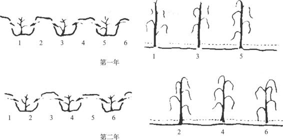

第十八章
古代农业生产成就

第一节
概 述
一、中国农业的起源和发展
人类最早获取生活资料的方式是采集植物的根、茎、叶和果实，以及捕捉野兽、鱼类。在经历了上百万年的采集、渔猎基础上，才进一步发明了农业。一般所指的农业，包括种植业和畜养业两大部门。农业的产生是人类发展史上的一个重要里程碑，标志着人类第一次从依赖自然界转变为开发、改造自然界。没有农业的发明，人类至今仍会过着穴居野住，采集、渔猎的生活，而不能进入此后经历的各个社会发展阶段。
农业起源于大约一万多年前，即考古学上的新石器时代。证之我国的考古出土材料亦如此。我国农业起源是多源的，迄今全国已发现了六七千处以上新石器时代的农业遗址。黄河流域已发现的最早农业遗址是分布在河南中部的裴李岗文化［1］和河北的武安磁山文化，［2］距今约有七八千年之久。与裴李岗、磁山文化年代差不多，经济面貌相似的还有分布于陇东和关中的大地湾文化（又称老官台文化），以及分布在陕南汉水上游的李家村文化。甘肃秦安大地湾遗址出土了距今七千多年的栽培黍遗存。［3］裴李岗文化遗址出土的石器，都为农具，制作精致，种类有石斧、石铲、骨耜、木耜、石锄、蚌锄、石镰、石磨盘、石磨棒等，即从砍伐林木、耕翻土地到收割和加工谷物用的农具已一应俱全，配套成龙。磁山遗址出土了四百多个窑穴，其中88个堆积有谷物遗存，估算原存量达5—6吨。又长江下游最早的浙江余姚河姆渡遗址，出土大量有关农业生产的农具、谷物等。根据发现的稻谷、稻壳和稻草的堆积层，有专家推算，折合稻谷估计在12吨以上。［4］农具中用鹿骨和牛肩胛骨加工成的骨耜，是用于挖沟和翻土的。出土的家畜骨骼，说明河姆渡人已饲养猪、狗和水牛。［5］河姆渡遗址距今已近七千年。以上考古材料再结合《易经·系辞下》说的“神农氏作，斫木为耜，揉木为耒，耒耜之利以教天下”；还有从近代有的少数民族的具体耕作方法来看，可以说，七八千年前我国农业在黄河流域和长江流域的许多地区已进入了锄（耜）农业阶段，比最早的“刀耕火种”农业已迈进了一个新阶段。原始农业又分为三个阶段，即刀耕火种、锄（耜）耕和发达锄（耜）耕与犁耕萌芽阶段。那么它们的起源时间当在一万年以前。除上述考古材料外，在长江中游距今9000年的湖南澧县彭头山遗址中发现了保存在陶片和红烧土中的碳化稻谷，［6］与彭头山文化时代相近的湖北城背溪文化等遗址也发现了早期稻作遗存。同属长江水系的汉中盆地李家村和何家湾遗址，也有距今七八千年的稻作遗存出土；［7］湖南道县玉蟾岩甚至出土了距今约一万年的栽培稻遗存。［8］华南地区许多新石器时代早期的遗址中，都出土了与农业定居生活有关系的原始陶片，还有农业初始阶段，安装在点种棒（木耒的雏形）上的“重石”、磨光的石斧和挖土点种的骨蚌器等。广西桂林甑皮岩遗址出土了迄今世界上最早的家猪遗骨。［9］江西万年仙人洞和吊桶环遗址则出土了距今一万年前的栽培稻遗存。云贵和西藏地区的原始农业文化更具有地方特点和多样性，至迟距今四千多年前已有一些定居农业村落出现。东北和内蒙古、新疆地区，以种植业为主的遗址比较密集分布在东北大平原的中南部，如距今七千年左右的沈阳新乐文化遗址中出土了栽培黍的遗存。［10］渔猎为主的，以距今约六千年的黑龙江密山新开流遗址为典型。松嫩平原和呼伦贝尔草原也有星散分布以渔猎为主的原始遗存。蒙新高原则零星分布了一些以细石器为主要文化内涵的遗存，可能是原始人们游猎的遗迹。
农业生产的发展离不开气候、地形和水等自然资源条件，同时受到各个历史时期生产力水平的限制。因此，各地区的农业面貌和进程总是不尽相同和不平衡的。中国古代农业生产发展的进程大致如下：
根据考古学资料，在距今四五千年前，黄河、长江流域，甚至包括珠江、辽河流域、澜沧江流域部分地区的氏族部落已较普遍地形成了以原始种植业为主，兼营家畜饲养和采集渔猎的综合经济；有些地区则以畜牧业为主；有的氏族部落还过着以采集渔猎为主的生活。原始种植业的两种不同类型，也基本形成，即北方黄河流域为种粟等作物的旱地农业，南方长江流域则为种稻等作物的水田农业。畜牧业已获得较大发展，成为仅次于种植业的生产部门。采集渔猎业的比重下降，但仍然是原始农业经济的必要补充。在黄河、长江流域的一些地方，出现了原始的石犁、木犁，但由于使用范围不广，牵引动力为人，因此还远远不能取代耒耜的地位。夏、商、西周时期，黄河流域大部分地区和长江流域一些地区正经历着耕作区日益扩大，把游牧业进一步挤向北部、西北部边缘地区和山区的过程。农业生产技术的主要内容耕作、栽培、育种三个方面已基本具备。生产工具虽仍以木、石制作的为主，但青铜制的钱、镩等除草工具已经出现。园圃业已经出现，蔬菜和果树人工栽培的种类已不少，经济林木也开始人工种植。在种植业地区，家畜、家禽基本上已全为舍饲，饲养管理、繁殖和相畜术等已积累了较丰富的知识，还出现了兽医。养蚕受到了统治者的重视，已具有一定的规模。春秋战国是中国社会发生大变革的时期，农业生产的发展进入了一个新的阶段。铁器自此广泛使用，牛耕逐渐推广，社会生产力有很大提高。其结果，耕地得到大量垦辟，数口之家的自给自足小农经济从而得以出现。个体小农的生产积极性较高，而他们的经营范围又十分狭小，在这样的历史条件下，我国的农业生产开始走上以提高单位面积产量为主的道路。《荀子·富国》中说：“农精于田”，说明战国中期以后，农民已相当精通和讲究农业耕作和栽培技术。这一时期不仅大田耕作技术获得很大提高，其他园圃、林业、畜牧、蚕桑、渔业等方面的技术都有长足的进步。以后，秦和两汉到魏晋南北朝，是黄河流域农业生产大发展的时期。种植业迅速发展，农耕区向西北方面有了新的扩展；在长江以北淮水以南、关中、中原和西北部分地区出现了大大小小的灌溉农业区。长江下游广大低湿沮洳地带和岭南地区还远远没有大量开发。东汉末至三国、两晋、南北朝时期，黄河流域由于长期战乱，古代农耕重心地区遭到严重破坏。长江以南、五岭以北广大地区和巴蜀，逐渐发展成为比较重要的农耕区。特别是江南地区，由于人口、劳动力的增加，水利工程的兴修和北方一些先进技术的传入，农业生产水平开始赶上一再遭到破坏的黄河中下游地区，改变了“楚越之地，地广人稀，饭稻羹鱼，或火耕而水耨”［11］的状况。这一时期，北方旱作农业耕作技术体系形成。为克服干旱的自然条件，除兴修水利外，农民经过世世代代的努力摸索，在生产实践中总结出了以耕、耙、耱为中心的耕作保墒技术。同时，北方的连种制已定型、轮作复种制有了初步发展，间、混套作也有萌芽。隋、唐五代到宋元时期，一开始，南北方种植业都有较大发展，广大西北地区是当时的主要牧区。唐中期以后，南方农业发展更为迅速。汉代南方人口只占全国总人口的1／10强。东晋以后，北方人口大量南迁，使南方开发最需要的劳动力大大增加。这时已是“赋之所出，江淮居多”［12］，农耕区的重心已开始由黄河流域转移到长江流域。五代十国时，黄河流域又由于前后九十多年的军事破坏，已疲惫不堪；而长江以南则因战争破坏较少，两大河流域的经济发展水平，高低相去更远，北方日益依赖于南方。北宋和南宋时期，北方劳动人民第二次大批南迁，他们和南方农民一起进一步开发了江南。农耕和蚕桑的重心已明显地由黄河流域转移到了南方。此后，中国南方一直是全国的粮食和蚕桑的重要产地。随着长江流域的开发，水田耕作技术相应发展起来。宋、元时期便形成了以耕、耙、耖为特点的水田耕作技术体系。适应水田耕作的各种农具，自唐代以来陆续出现，如曲辕犁、龙骨车等。为扩大耕地面积和提高单位面积产量则出现了梯田、圩田以及一年二熟制等。在园艺、蚕桑、畜养、渔茶等经济部门，这时期在南方也取得突出成就。明清时期，围绕着人口猛增和商品经济的发展，中国农业科学技术进一步全面深入发展。宋代南方大规模开发，导致中国人口开始了长期增长的趋势，到1840年鸦片战争前夕，人口已突破四亿大关，远超过耕地的增长，人均耕地面积日益下降。宋代治平三年（1066）平均每人占有耕地面积为19.22亩，而到了清代道光二十一年（1841）就只有1.64亩了。［13］在人多地少的情况下，农民只有在技术上更下工夫了。首先是多熟种植技术获得很大发展；其次围绕多熟种植和提高单位面积产量，育种和其他许多栽培技术都有较大发展。这时期还从国外引进了玉米、甘薯和土豆等高产作物。可以说，直到近代不久前，中国农业生产中的作物组成、耕作制度、栽培技术等在此时期基本定型。
二、中国古代农业生产的特点
中国农业生产在发展过程中有其自身的特点。首先是成就突出，至少在有文字记载的四千多年来，稳定而没有中断过。从整个人类文化发展史看，必须要有相当稳定的农业生产，供给人们以生活物资，然后作为上层建筑的文化，才有产生和发展的基础。世界上任何一个民族或集团，其农业生产中断了，文化和历史传统也一定随之中断。如曾经繁荣一时的文明古国底格里斯河和幼发拉底河流域的古巴比伦，尼罗河流域的古埃及，还有古罗马以及美洲印加帝国，由于外族的入侵或严重自然灾害等原因，而造成农业生产的破坏、衰落，甚至中断，以致引起国家的衰落、消亡，中国农业基础稳定和成就突出的重要原因是在农业生产上有一个先进的、丰富的、完备的科学技术知识体系。这个体系是中国文化的一个重要构成部分，集中了无数劳动人民的智慧，经过成千上万年的积累，逐渐充实、改进、提高而臻于完备的。几千年来，中国农业经历了无数次大大小小天灾人祸的考验，始终没有出现过由于技术指导上的错误而引起的重大失败。［14］
其次，由于社会历史的各种原因，诸如土地所有权分散、人均耕地少等，中国农业走的是向土地要粮食和纤维的以种植业为主的发展道路。历史地形成了中原地区重粮食和纤维，西部、北部重畜牧，东部重鱼盐，山区重木材，开发较晚的南方也是以粮食和纤维为主的局面。两千多年来，除了以畜牧业为主的地区外，中国广大农业区一直以“五口之家”的家庭为经营单位，在不大的一块土地上年年种满作物，同时圈养一些家畜和家禽，畜牧在经济中所占比重很小。这同欧洲从古代农业直到转变为近代农业时，仍继承了古代农业牧草和作物轮作，畜牧业在农业经济中比重大的特点迥然不同。
中国古代农业的另一个特点是有精耕细作的优良传统。“精耕细作”系近代人对中国传统农业（近年来，农史学家们根据农业生产工具和技术的特点，把农业生产的发展历史过程大致划分为原始农业〔在中国约为距今一万多年至4000年前〕、传统农业〔约距今4000年前直到近代〕和近现代农业三个阶段）精练的一个概括，指的是一个综合技术体系，而不是单项技术；甚至不是局限于种植业，其基本精神也贯彻于畜牧、蚕桑、渔业、林木生产等领域。精耕细作是以劳动集约为主，即是提高劳动强度，实行精耕细作，充分挖掘土地增产潜力，努力提高单位面积产量。具体措施是充分用地和积极养地紧密相结合，即以合理的耕作、轮作、施肥和灌溉（有条件的地方）来改良土壤，提高地力，从而保证包括连种、复种、间作、套种相结合的高复种指数的用地体系的实现。欧美人把中国水稻区的耕作方式叫做“园耕”，意思是在大田作业中应用园艺的经营方式。这是极为集约的农田操作和管理；而且主要是靠农民操作手法的灵巧，用简陋的工具做出细活来。这也显然不同于欧洲中世纪耕作粗放的二圃制和三圃制。
三、中国古代的农学思想
春秋战国时期，中国的农学家就开始把在此以前丰富的农业生产实践进行总结和理论概括，以后的农学家在这方面也不断做了许多工作。中国古代的农学思想有许多很有价值的理论与原则，至今仍闪烁着人类智慧的光芒。
1．农业生产中的核心思想“三才”理论
“三才”一词最早见于《易经·系辞下》：“易之为书也，广大悉备，有天道焉，有人道焉，有地道焉。”可见“三才”理论是讲天、地、人的变化与关系的。它是战国时期比较流行的哲学观点之一，被人们运用于经济生活、政治活动和军事作战等各个方面。《吕氏春秋·审时》：“夫稼，为之者人也，生之者地也，养之者天也。”这段话阐明了农业生产的三大要素是天、地、人，而且把人的因素列为首要地位。到汉代，天、地、人演变为“力”、“地”、“时”。晁错说：“粟米布帛，生于地，长于时，聚于力。”［15］这里的“力”，即人力，具有重视人工劳动的含义。中国历代农学家都继承了在农业生产中强调人力作用这一思想。农业生产中的“时宜”、“地宜”、“物宜”的“三宜”原则是“三才”理论的另一衍化。其主要内涵就是农业生产必须根据天时、地利的变化和农业生物生长发育的规律，采取相应的措施。“三宜”原则也开始出现于春秋战国时期。明代农学家马一龙对之作了较为全面、科学的说明：“合天时、地脉、物性之宜，而无所差失，则事半而功倍。”［16］“三才”理论运用在中国农业生产中，为精耕细作技术体系形成和发展的主要指导思想，对农业生产的发展产生了巨大的影响和作用。其他较重要的农学思想还有地力“常新壮”论、“风土”论和在农业生产中实现废物利用，物质循环的思想等。
2．具有浓厚特色的经营思想
与中国古代国情相适应的农业经营思想，有的直到今天还具有生命力和现实意义。战国初，李悝在魏国为相时，作“尽地力”之教，是最早的集约耕作思想的表现；“治田勤谨，则亩益三升”［17］，就是加强劳动强度，实行精耕细作，挖掘土地潜力，提高产量之意。汉代，通过推广“代田法”和“区田法”等方式，把精耕细作推向一个新的高度。如代田法（图18—1）“一岁之收，常过缦田亩一斛以上，善者倍之”［18］。《氾胜之书》第一次记述了区田，以后历代都有试种者。区田的技术要点是集中施用水、肥，保证作物能够生长良好，获得丰产。

图18-1 代田法经营示意图
“量力而行”的思想提出也较早。晋代傅玄（217—278）提出：“不务多其顷亩，但务修其功力。”［19］即主张提高农业产量，不要靠扩大耕地面积，而应重视在一定单位面积上多投入劳动。后魏农学家贾思勰进一步提出“凡人家营田，须量己力”［20］。意思说，经营农业的规模，需要度量自己的力量，与物力、劳力等相称。
“扬长避短，发挥优势”也是中国农业经营的传统思想之一。《史记·货殖列传》中的“水居千石鱼陂，山居千章之材。安邑千树枣；燕秦千树栗；蜀、汉、江陵千树橘；淮北、常山已南，河济之间千树萩；陈、夏千亩漆；齐、鲁千亩桑麻；渭川千亩竹。”就是汉代人们根据地区特点，因地制宜发展各项农业生产，扬长避短，发挥地区优势的生动写照。清代唐甄在《潜书·富民》中又根据他所处时代的情况，作了“陇右牧羊，河北育豕，淮南饲鹜，湖滨缫丝，吴乡之民，编蓑织席”的真实描述。
“趋利避害”是中国古代农业经营思想的又一重要组成部分。《淮南子·缪称训》：“人之情，于害之中争取小焉，于利之中争取大焉。”趋利避害思想应用到农业生产上就是“种谷必杂五种，以备灾害”［21］的经验总结。明代的马一龙不仅明确总结出农业生产的趋利避害原则就是“知其所宜，用其不可弃；知其所宜，避其不可为”，而且把它提到“力足以胜天”［22］的高度。